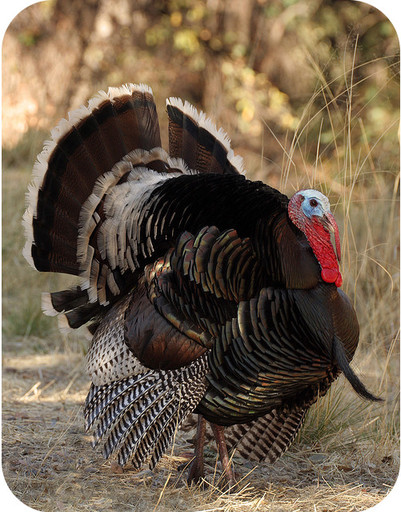
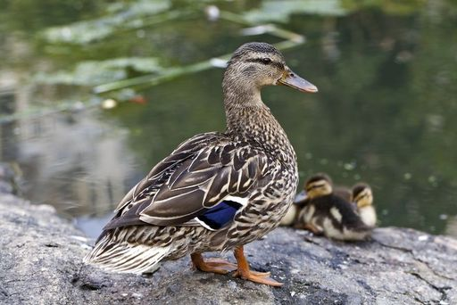
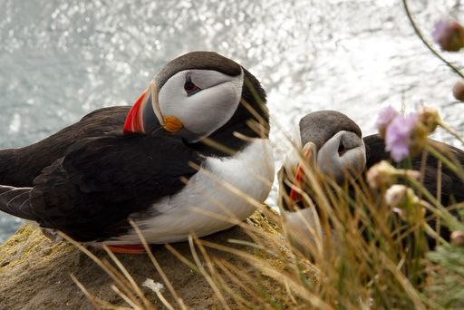
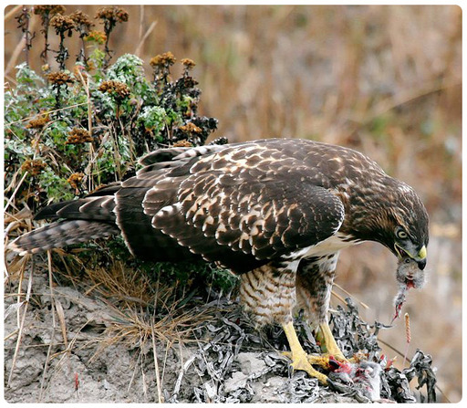
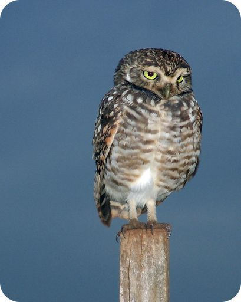
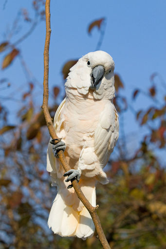
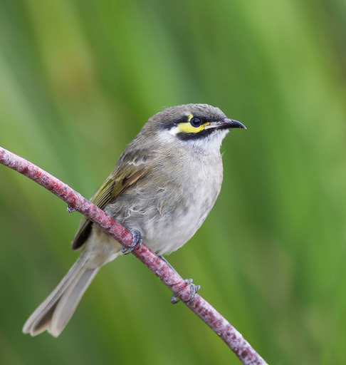

| Order | Description | Example |
|---|---|---|
| Landfowl: turkeys, chickens, pheasants | They are large in size; they spend most of their time on the ground; they usually have a thick neck and short, rounded wings; their flight tends to be brief and close to the ground. |
turkey  |
| Waterfowl: ducks, geese, swans | They are large in size; they spend most of their time on the water surface; they have webbed feet and are good swimmers; most are strong flyers. |
ducks  |
| Shorebirds: puffins, gulls, plovers | They range from small to large; most live near the water, and some are sea birds; they have webbed feet and are good swimmers; most are strong flyers. |
puffin  |
| Diurnal Raptors: hawks, falcons, eagles | They range from small to large; they are active during the day and sleep during the night; they have a sharp, hooked beak and strong legs with clawed feet; they hunt by sight and have excellent vision. |
hawk  |
| Nocturnal Raptors: burrowing owls, barn owls, horned owls | They range from small to large; they are active during the night and sleep during the day; they have a sharp, hooked beak and strong legs with clawed feet; they have large, forward-facing eyes; they have excellent hearing and can hunt with their sense of hearing alone. |
burrowing owl  |
| Parrots: cockatoos, parrots, parakeets | They range from small to large; they are found in tropical regions; they have a strong, curved bill; they stand upright on strong legs with clawed feet; many are brightly colored; they are very intelligent. |
cockatoo  |
| Perching Birds: honeyeaters, sparrows, crows | They are small in size; they perch above the ground in trees and on buildings and wires; they have four toes for grasping a perch; many are songbirds. |
honeyeater  |